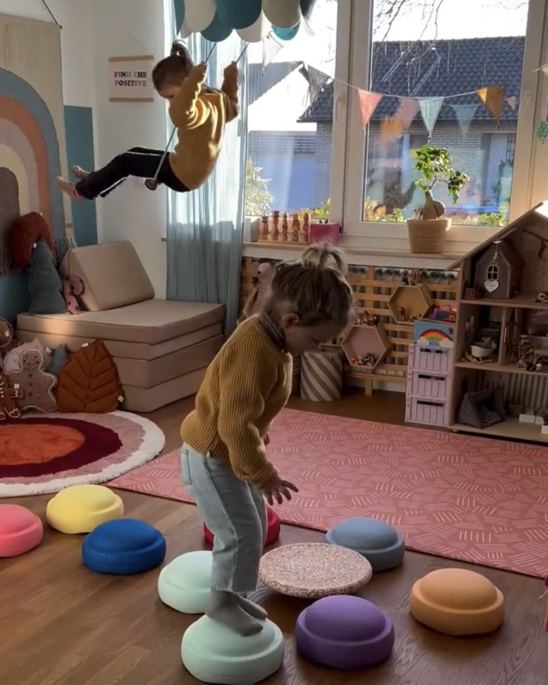
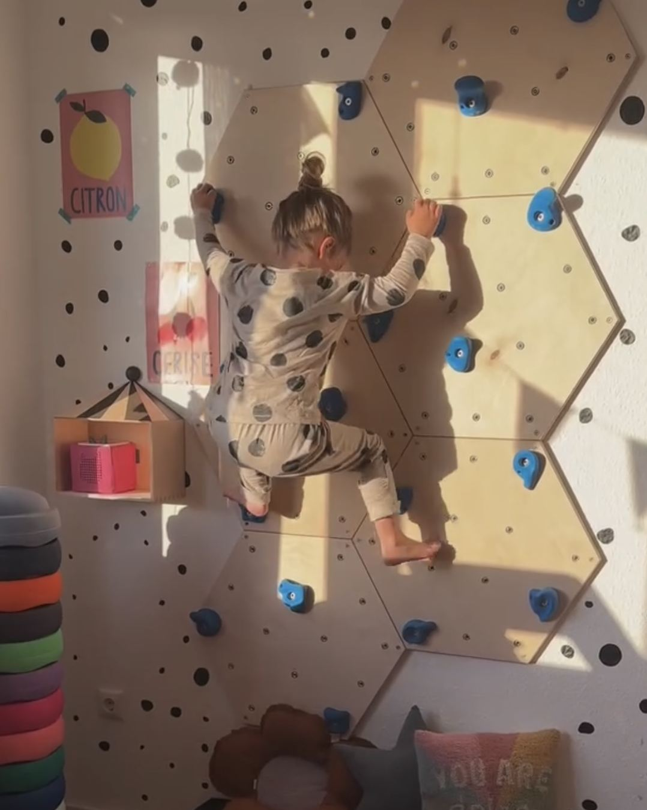
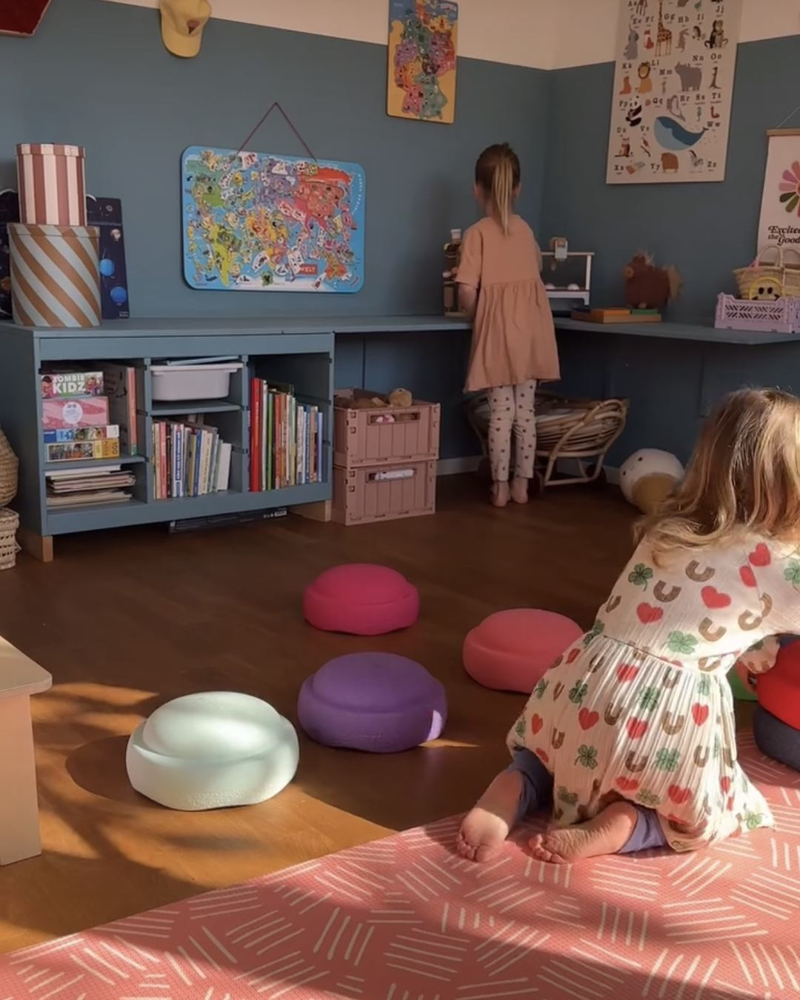
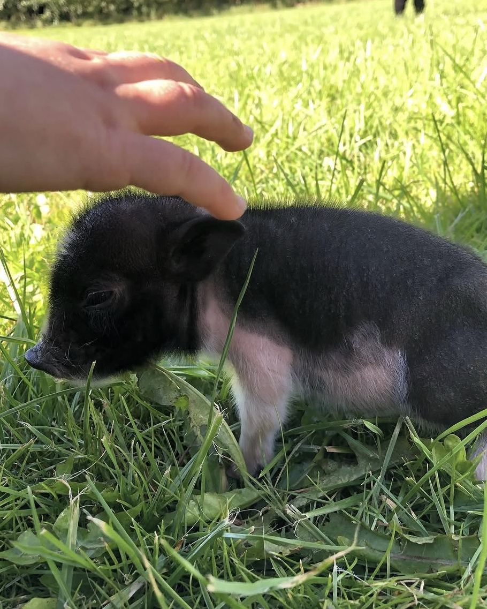
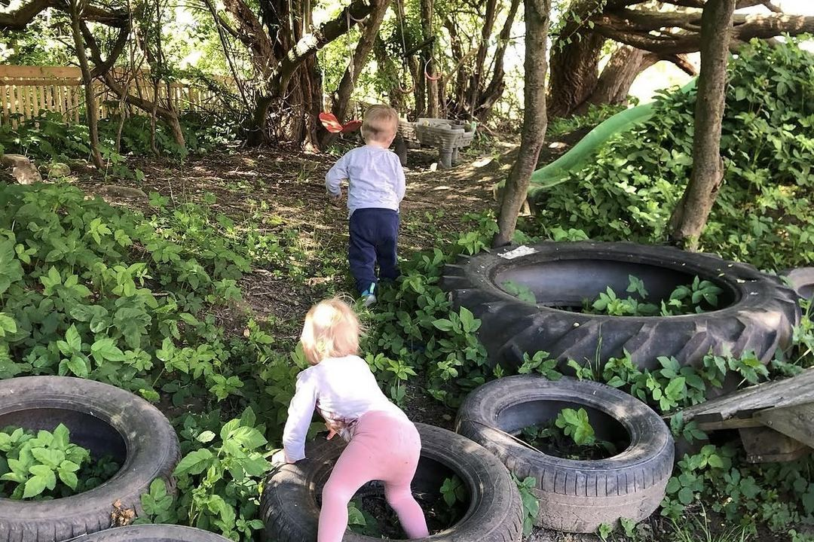
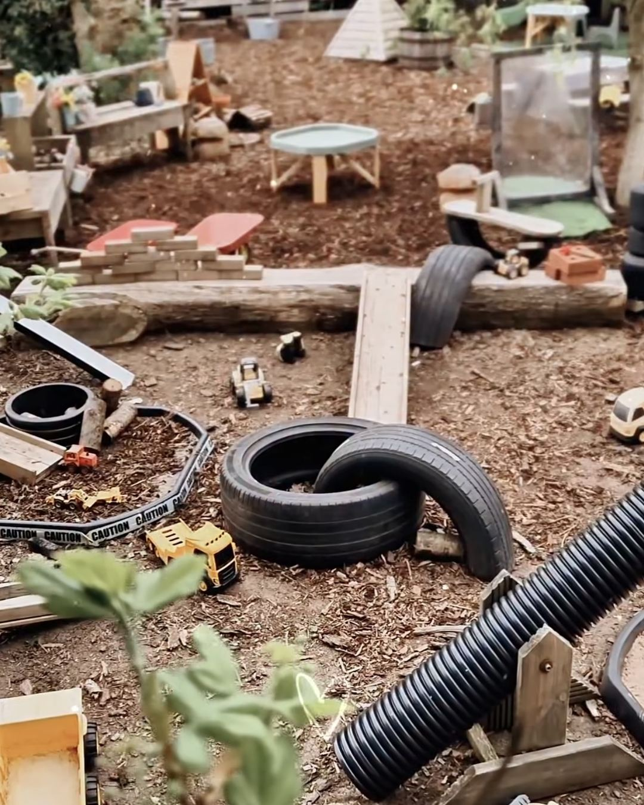
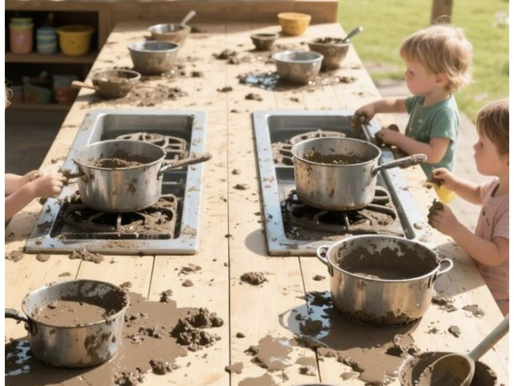
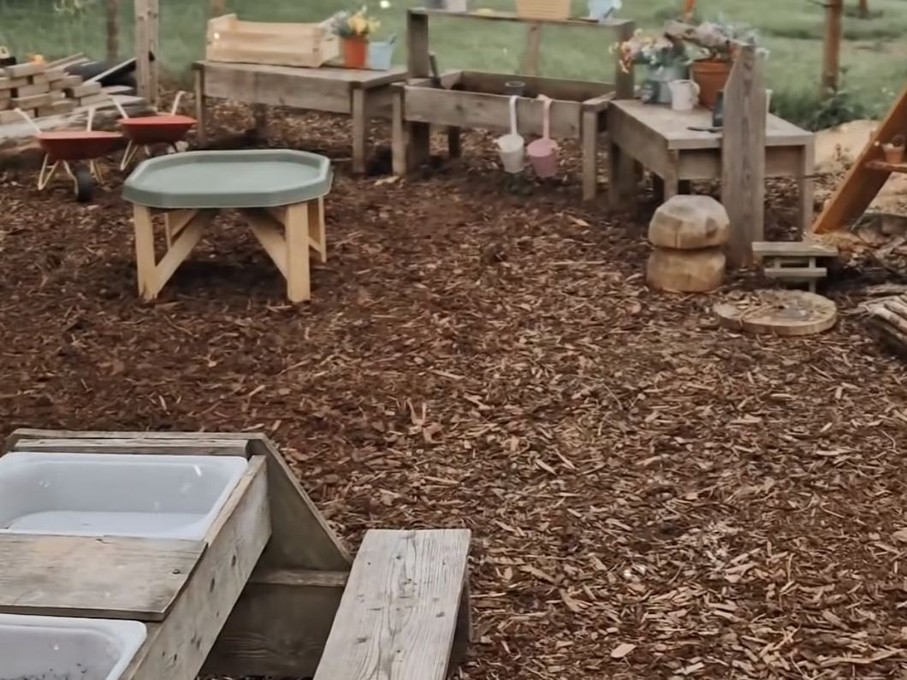

Her hvor vi bor
Fire steder, én hverdag
Luk øjnene et øjeblik og forestil jer ikke et legeværelse – forestil jer et helt sted. Et dedikeret dagplejehus, en stald, en lille skov og en kæmpe have, bygget til præcis én ting: børns leg og opdagelser.



Dagplejehuset
Vi har ikke bare et hjørne eller et værelse med legetøj – vi har et helt hus, indrettet fra bunden til de 0–3-årige. Plads til at kravle og boltre sig i „Tumleren“, plads til at bygge, plads til at trække sig tilbage til en rolig stund, når det er der brug for.
Et sted, hvor alting er i barnehøjde, fordi det er barnets hus lige så meget, som det er mit.

Stalden
Gå gennem døren til stalden, og I møder både dyrene og en duft af hø. Her er højt til loftet, bogstaveligt talt – plads til at hoppe og svinge sig i høet, plads til at komme tæt på dyrene, og plads til de opgaver, der hører til: at give mad, samle æg, klappe dyrene eller bare stå og kigge.

Baghaveskoven
For enden af haven ligger vores egen lille skov, med en skovlegeplads gemt mellem træerne. Her er stier, der skal udforskes, grene der skal klatres i, og en helt anden ro end i haven – skovens egen stemning, kun et par minutters gåtur (eller traktortur) hjemmefra.

Haven
Og så er der haven. En kæmpe have, hvor hver eneste del er tænkt til leg: mudderkøkkenet, den store sandkasse, kroge og gemmesteder, plads til at løbe, og plads til at bygge og til at grave.

